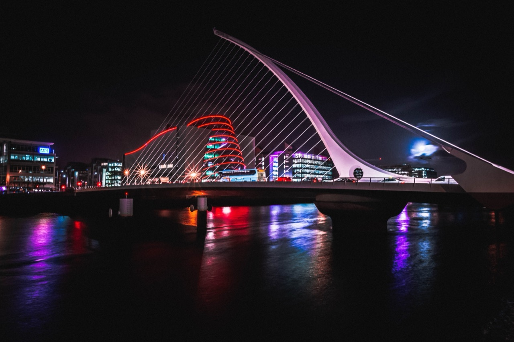

Ireland represents one of Europe's most visually captivating landscapes, offering extraordinary diversity of scenic beauty spanning dramatic coastal cliffs, lush pastoral valleys, windswept moorlands, and atmospheric urban environments that have inspired artists, photographers, and travelers for centuries. The island's distinctive visual character emerges from unique geological history, climate patterns, and complex interplay between natural landscape and human settlement that produces aesthetic experience simultaneously rugged and intimate, ancient and contemporary. Ireland's landscape backgrounds and wallpapers—increasingly prevalent within digital visual culture—translate physical landscape into mediated visual forms accessible globally, democratizing access to Irish scenery while raising important questions about representation, tourism, and authentic engagement with place. Understanding Ireland's distinctive visual character requires attention to geological foundations, historical landscape formation, and complex ways contemporary visual culture mediates and transforms Ireland's physical reality into consumable images.
Ireland's extraordinary visual landscape emerges from profound geological processes extending millions of years into prehistory. During Pleistocene epoch, Ireland experienced multiple glaciations profoundly transforming landscape. Glacial action carved distinctive topographical features characterizing contemporary Irish landscape. Glaciers created U-shaped valleys, excavated lakes, and deposited glacial materials creating underlying terrain. The island's western coastline exemplifies this glacial legacy; dramatic sea cliffs including famous Cliffs of Moher rise dramatically from Atlantic, representing erosion of glacially-modified terrain. These cliffs, towering nearly 200 meters above turbulent Atlantic waters, create breathtaking visual spectacle attracting hundreds of thousands of annual visitors. The cliffs' geological structure—alternating layers of sandstone, shale, and coal—produces distinctive horizontal stratification visible throughout cliff face, creating formal visual patterns contributing to landscape's aesthetic impact. Similar glacial processes created other distinctive coastal formations including Dingle Peninsula's dramatic seascapes and County Clare's otherworldly Burren landscape featuring distinctive limestone formations creating distinctive visual character.

Ireland's interior landscape demonstrates equal visual distinctiveness despite lesser dramatic topography than coastal regions. Central Irish plains, glacially-created during Pleistocene, feature rolling agricultural landscape divided by extensive system of hedgerows, stone walls, and small fields characteristic of Irish countryside. This pastoral landscape, shaped through centuries of agricultural practice and settlement, presents visual aesthetic emphasizing human-scaled engagement with land. Green fields, often appearing impossibly verdant due to Ireland's maritime climate producing substantial precipitation, create visual impact frequently referenced in popular descriptions of Ireland as "Emerald Isle." This green landscape against gray skies produces distinctive chromatic relationships fundamental to Irish landscape's aesthetic character. The pastoral Irish countryside, while lacking dramatic topographical features, offers contemplative visual experience engaging with cycles of agricultural life and human presence within natural environment.
Ireland's distinctive climate fundamentally shapes its visual character and aesthetic impact. The island's maritime location in North Atlantic produces unpredictable weather characterized by frequent cloud cover, rain, and dramatic sky formations. This weather pattern creates atmospheric conditions fundamentally different from Mediterranean or continental European landscapes. Irish skies frequently display dramatic cloud formations, with shafts of sunlight breaking through clouds to illuminate landscape below. These atmospheric conditions produce distinctive lighting phenomena creating visual drama and emotional resonance. The constant interaction between light and shadow, between cloud cover and momentary sunlight breaking through, creates dynamic visual environment where landscape appearance shifts continuously depending on weather and time of day. This atmospheric instability makes Irish landscape simultaneously challenging to represent visually and remarkably compelling—conditions creating extraordinary visual moments require patience and receptivity to capture effectively.

Ireland's landscape demonstrates profound human presence and historical depth accumulated through millennia of settlement, cultivation, and cultural practice. Archaeological evidence reveals human occupation extending back thousands of years, with distinctive megalithic monuments including passage tombs at Newgrange indicating sophisticated prehistoric societies. Celtic settlement established cultural traditions persisting into contemporary period. Medieval monastic settlement, following arrival of Christianity, left architectural landscape still visible in ruined monasteries and round towers scattered throughout Irish countryside. Norman invasion and subsequent English colonization dramatically transformed landscape, introducing new settlement patterns and agricultural practices. More recently, industrial development and twentieth-century urbanization modified landscape significantly. Contemporary Irish landscape represents palimpsest of historical periods, with layers of human activity visible in standing structures, field patterns, and place names. This historical depth contributes substantially to Irish landscape's aesthetic and emotional resonance—viewers recognize landscape as repository of history, containing traces of human endeavor across centuries.
Ireland's urban landscapes contribute importantly to island's overall visual character, particularly regarding representations accessible through digital visual culture. Dublin, Ireland's capital, represents major artistic and cultural center with architectural heritage spanning medieval period through contemporary development. Georgian architecture from eighteenth century provides distinctive streetscapes and urban character recognized globally. Historic city center preserves medieval street patterns and numerous historic structures creating walkable urban environment combining historical authenticity with contemporary commercial vitality. Cork, Galway, Limerick, and other Irish cities similarly preserve architectural heritage creating distinctive urban visual character reflecting various historical periods. These urban environments, while distinct from dramatic rural landscapes, contribute importantly to comprehensive understanding of Irish visual landscape. Contemporary urban photography emphasizing street life, architectural detail, and urban atmosphere augments representations of rural countryside, presenting more complete picture of Irish scenery.

Ireland's status within global visual culture reflects complex intersection of romantic idealization and authentic visual distinction. Ireland holds prominent place within Western imagination, associated with particular qualities including natural beauty, cultural authenticity, spiritual depth, and romantic atmosphere. This imaginative association drives substantial tourism industry and cultural production creating visual representations of Ireland for global consumption. Wallpapers, backgrounds, and photographic collections featuring Irish landscapes circulate extensively through digital visual culture, accessible to global audiences regardless of physical proximity to Ireland. These mediated representations introduce global audiences to Irish visual landscape, democratizing access while raising questions about representation's accuracy and effects on tourism and cultural understanding. The gap between imagined Ireland—filtered through romantic associations and aesthetic conventions—and experienced Ireland becomes crucial consideration when engaging with Irish landscape representations.
Contemporary landscape photography emphasizing Irish scenery demonstrates various aesthetic approaches and philosophical frameworks guiding visual representation. Fine art photography examining Irish landscape typically emphasizes formal composition, atmospheric effects, and emotional resonance emerging from landscape engagement. Photographers including Padraig Divers and others create images emphasizing distinctive qualities of Irish landscape—dramatic weather, intimate pastoral scenes, atmospheric coastal settings. These artistic approaches to landscape photography demonstrate commitment to authentic engagement with place while employing sophisticated compositional and technical approaches. Tourism photography emphasizing Ireland's attractions similarly demonstrates varied approaches, from postcard-style images emphasizing iconic sites to more exploratory photographic practice discovering less well-known locations. This diversity of photographic approaches reflects varied motivations driving landscape representation—artistic aspiration, commercial tourism promotion, personal memory documentation.

Digital wallpaper culture and landscape imagery circulation within digital visual contexts create particular relationships between viewers and represented landscape. Wallpapers, by design, occupy intimate position within daily visual experience—observers encounter wallpaper images repeatedly, often unconsciously. This repeated exposure creates familiarity and emotional association independent of physical travel or direct landscape experience. Wallpapers featuring Irish landscapes allow global audiences to inhabit Irish visual environments quotidianally, incorporating Irish visual aesthetics into personal digital experience. This mediated relationship with distant landscape raises philosophical questions about contemporary visual culture and experience of place in globally-connected world. Physical tourism requires financial resources and temporal commitment, restricting access to those possessing requisite advantages. Digital wallpapers and images democratize access to landscape representations, allowing broader participation in visual experience of distant places. Yet this democratization involves translation of physical landscape into digital image, with inevitable losses and transformations attending such representation.
The ecological implications of Ireland's landscape representation deserve serious consideration. Landscape tourism, partially stimulated by circulated representations including wallpapers and photographic imagery, generates substantial environmental impacts. Increased tourism pressure threatens landscape fragility, with popular sites experiencing degradation from excessive visitation. Climate change additionally threatens Irish landscape's distinctive character—changing weather patterns alter atmospheric conditions producing characteristic visual effects, while rising sea levels and increased storm intensity threaten coastal landscapes including famous sea cliffs. Digital circulation of landscape representations stimulates desire for physical pilgrimage, potentially accelerating environmental pressures. Conversely, engaging with landscape representations digitally might reduce physical tourism pressure by satisfying desire for landscape experience without requiring physical travel. The relationship between visual representation and environmental impact remains complex and contested, resisting simple causality.
Ireland's landscape possesses distinctive visual character emerging from geology, climate, historical depth, and human cultural practices accumulated through millennia. This landscape's aesthetic power and emotional resonance reflect genuine properties of place—distinctive topography, atmospheric effects, and human-landscape relationships producing authentic visual experience. Simultaneously, mediated representations of Irish landscape necessarily involve interpretive choices, aesthetic conventions, and selective emphasis inevitably transforming physical reality into visual representation. Digital wallpapers and landscape photography circulating globally introduce Irish landscape to millions encountering it through screens rather than physical presence. These representations simultaneously democratize access while raising questions about authenticity, environmental impact, and meaning of landscape engagement mediated through digital technology. Understanding Ireland's visual landscape requires maintaining dual perspective, appreciating both authentic properties of place and interpretive dimensions inevitable in representation. Irish landscape continues inspiring artistic engagement, tourism, and aesthetic appreciation, functioning as important cultural symbol while demanding respectful engagement with place itself and environmental consideration regarding representation's effects.